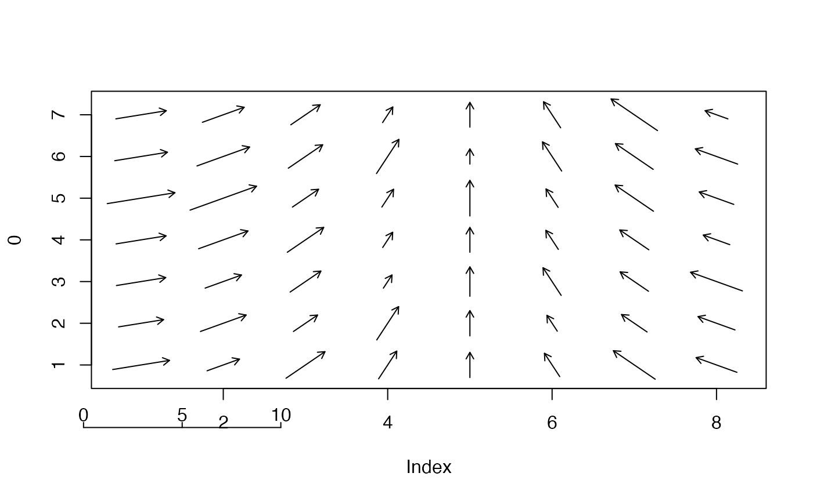

Key for interpreting lengths in a plot
lengthKey.RdKey for interpreting lengths in a plot
Details
lengthKey displays a line with tick marks and the values in tickpos above those tickmarks. It is useful when line segments on a plot represent numeric values. Note that if the plot does not have a 1:1 aspect ratio, a length key is usually misleading.
Examples
# manufacture a matrix of orientations in radians
o<-matrix(rep(pi*seq(0.1,0.8,by=0.1),7),ncol=8,byrow=TRUE)
m<-matrix(rnorm(56)+4,ncol=8,byrow=TRUE)
# get an empty plot of approximately 1:1 aspect ratio
plot(0,xlim=c(0.7,8.3),ylim=c(0.7,7.3),type="n")
vectorField(o,m,vecspec="rad")
# the scaling usually has to be worked out by trial and error
lengthKey(0.3,-0.5,c(0,5,10),0.24)
